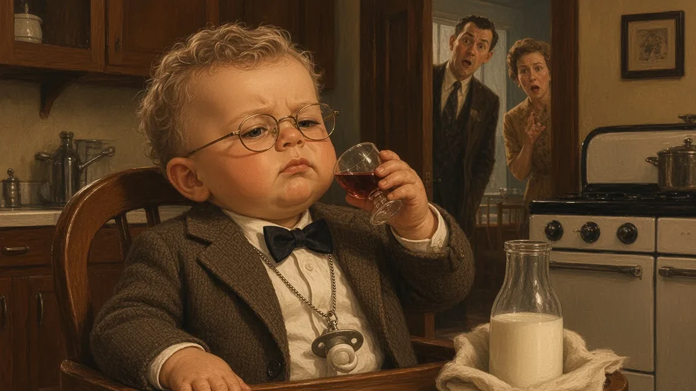
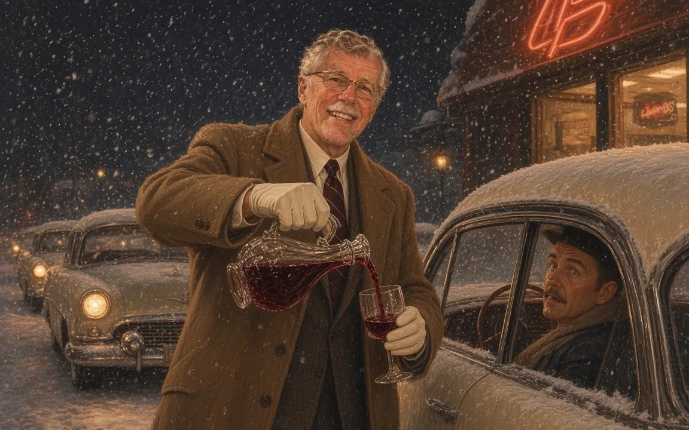
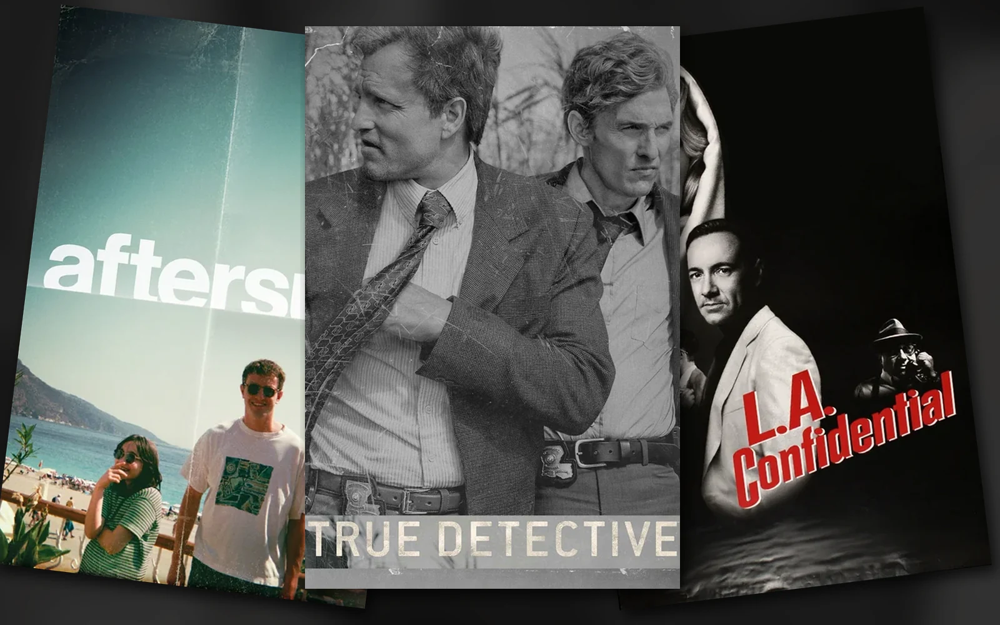
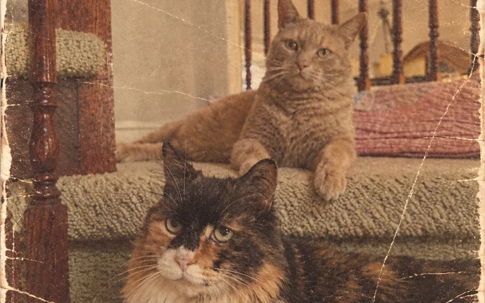
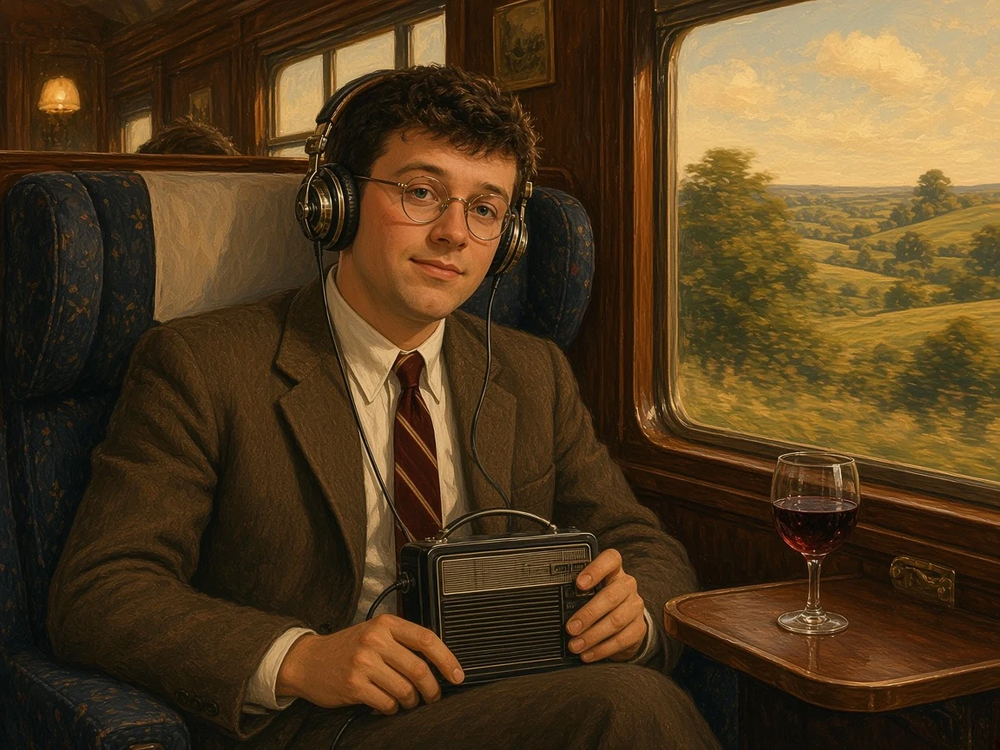

The directory
Around the house
Start with the life, or go straight to the cellar, the shelves, the screen, or the stairs.

I · The biography
The Life of Wilhelm Smithers
Five chapters from an earnest high chair in Des Moines to the cellars of Milton and beyond. Now kept in its own wing so the front hall stays uncluttered.
Read the five chapters

II · Cellar & drive-thru
The Service Window
Ten fast-food staples paired with real bottles, chosen strictly for fat, salt, sugar, acid, and heat.
10 pairings
III · Reading
The Library
Thirty-seven books finished in full, with margin notes transcribed from napkins and receipts.
37 volumes

IV · Film & TV
The Screening Room
Thirty-five films and programmes scored without consulting consensus.
35 titles

V · Household
Pets
Larry, still running the place, and Freddy (Mr. Fred), remembered fondly.
2 cats

VI · Listening
Podcasts
Episodes worth a second hearing, grouped by show.
70 episodes